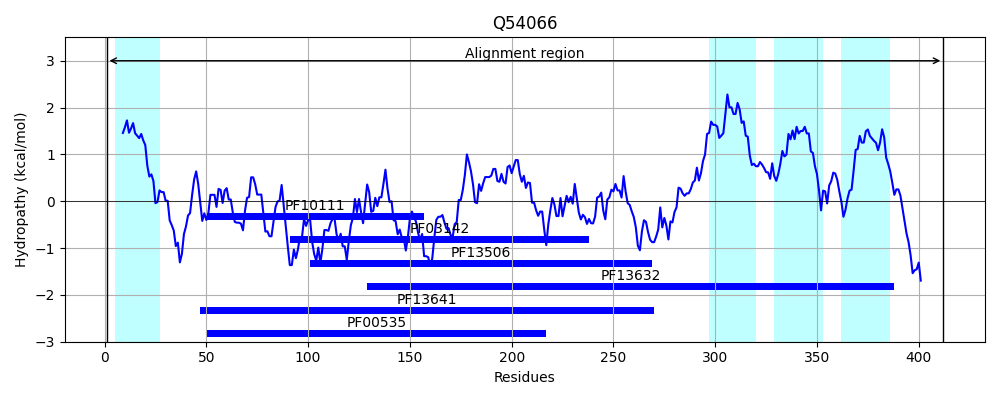
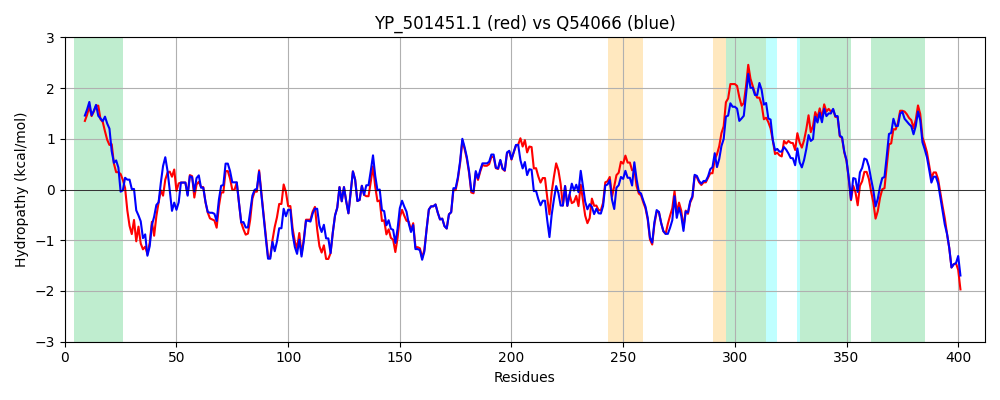

Hit Accession: Q54066
Hit TCID: 4.D.1.1.2
Hit Description: gnl|BL_ORD_ID|14005 gnl|TC-DB|Q54066|4.D.1.1.2 Poly-beta-1,6-N-acetyl-D-glucosamine synthase OS=Staphylococcus epidermidis (strain ATCC 35984 / RP62A) GN=icaA PE=1 SV=1
Mach Len: 412
e:0.000000
Query TMS Count : 5
Hit TMS Count: 4
TMS-Overlap Score: 4.550000
Predicted Substrates:CHEBI:24403;glycosyl group
BLAST Alignment:
Score: 1766 , Bit scores: 684 bits, E-value: 0.0e+00, Alignment length: 412, Percentage identity: 79
Query: 1 MQFFNFLLFYPVFMSIYWIVGSIYFYFTREIRYSLNKKPDINVDELEGITFLLACYNESETIEDTLSNVLALKYEKKEIIIINDGSSDNTAELIYKIKENNDFIFVDLQENRGKANALNQGIKQASYDYVMCLDADTIVDQDAPYYMIENFKHDPKLGAVTGNPRIRNKSSILGKIQTIEYASLIGCIKRSQTLAGAVNTISGVFTLFKKSAVVDVGYWDTDMITEDIAVSWKLHLRGYRIKYEPLAMCWMLVPETLGGLWKQRVRWAQGGHEVLLRDFFSTMKTKRFPLYILMFEQIISILWVYIVLLYLGYLFITANFLDYTFMTYSFSIFLLSSFTMTFINVIQFTVALFIDSRYEKKNMAGLIFVSWYPTVYWIINAAVVLVAFPKALKRKKGGYATWSSPDRGNTQR 412
M FNFLLFYP+FMSIYWIVGSIY++F +E ++ + ++EGI+FLLACYNESET++DTLS+VL+L+Y +KEIIIINDGSSDNTAE+IY K+N+DF FVDL+ NRGKANALN+GIKQASY+YVMCLDADT++D DAP+YMIE+FK +PKLGAVTGNPRIRNKSSILGKIQTIEYAS+IGCIKRSQ+LAGA+NTISGVFTLFKKSA+ DVGYWDTDMITEDIAVSWKLHL Y IKYEP A+CWMLVPET+GGLWKQRVRWAQGGHEVLLRDF+ T+KTK+ LYILMFEQI SI WVYIVL YL +L ITAN LDYT++ YSFSIF SSFTMTFIN+IQFTVALFIDSRYEKKN+ GLIF+SWYPT+YW+INAAVV++AFPKALKRKKGGYATWSSPDRGN QR
Sbjct: 1 MHVFNFLLFYPIFMSIYWIVGSIYYFFIKEKPFNRSLLVKSEHQQVEGISFLLACYNESETVQDTLSSVLSLEYPEKEIIIINDGSSDNTAEIIYDFKKNHDFKFVDLEVNRGKANALNEGIKQASYEYVMCLDADTVIDDDAPFYMIEDFKKNPKLGAVTGNPRIRNKSSILGKIQTIEYASIIGCIKRSQSLAGAINTISGVFTLFKKSALKDVGYWDTDMITEDIAVSWKLHLFDYEIKYEPRALCWMLVPETIGGLWKQRVRWAQGGHEVLLRDFWPTIKTKKLSLYILMFEQIASITWVYIVLCYLSFLVITANILDYTYLKYSFSIFFFSSFTMTFINIIQFTVALFIDSRYEKKNIVGLIFLSWYPTLYWVINAAVVIMAFPKALKRKKGGYATWSSPDRGNIQR 412 | Protein Hydropathy Plots: |
|---|
 |  |
Pairwise Alignment-Hydropathy Plot:
|
|---|
|  |